Virtual Memory, Processes, and Sharing in Multics
Summary
The value of a computer system to its users is greatly enhanced if a user can, in a simple and general way, build his work upon procedures developed by others. The attainment of this essential generality requires that a computer system possess the features of equipment-independent addressing, an effectively infinite virtual memory, and provision for the dynamic linking of shared procedure and data objects. The paper explains how these features are realized in the Multics system.
Introduction
In Multics (Multiplexed Information and Computing Service), fundamental design decisions were made so the system would effectively serve the computing needs of a large community of users with diverse interests,operating principally from remote terminals. Among the objectives were these three:
- To give the system responsibility for managing the distribution of information among the levels of the physical storage hierarchy.
The efficient multiprogramming of many computations makes this essential, but of greater importance is the fact that users are relieved of the burden of pre-planning the transfer of information between storage levels, and programs become independent of the nature of the auxiliary storage devices in the system.
- To permit a degree of programming generality not previously practical.
This includes the ability of one procedure to use another procedure knowing only its name, and without knowledge of its requirements for storage, or the additional procedures upon which it may in turn call.
- To permit sharing of procedures and data among users subject only to proper authorization.
Sharing of procedures in core memory is extremely valuable in a multiplexed system so that the cluttering of auxiliary storage with myriad copies of routines is avoided, and so unnecessary information transfers are eliminated. The sharing of data objects in core memory is necessary to permit efficient and close interaction between processes.
These objectives led to the design of a computer system [6] (the General Electric Model 645) embodying the concepts of paging [8] and segmentation [3] on which the initial implementation of Multics will run.
This paper explains some of the more fundamental aspects of the Multics design. The concepts of "process" and "address space" as implemented in Multics are defined, some details of the addressing mechanism are given, and the mechanism by which "dynamic linking" is accomplished is explained.
The Multics Concepts of Process and Address Space
Several interpretations of the term "process" have come into recent use. The most common usage applies the term to the activity of a processor in carrying out the computation specified by a program.[4,5] In Multics, the concept of process is intimately connected with the concept of address space. Multics processes stand in one-to-one correspondence with virtual memories. Each process runs in its own address space which is established independently of other address spaces. Processes are run on a processor of the Multics system at the discretion of the traffic controller module of the Multics supervisor.
The virtual memory (or address space) of a Multics process is an ordered set of as many as 214 segments each consisting of as many as 218 36-bit words. The arguments for providing a generous address space having this structure have been given by Dennis.[3] Briefly, the motivation is to avoid the necessity of procedure overlays, or the movement of data within the address space, which generally lead to naming conflicts and severe difficulties in sharing information among many processes.
Each segment is a logically distinct unit of information having attributes of length and access privilege. For present purposes, we consider two segment types:
data
procedure
A segment is treated as procedure if it is intended to be accessed for instruction fetch by a processor. Other segments (including e.g. a source program file) are considered to be data. Instruction fetch references to procedure segments are allowed, as are internal data reads. Writing into a procedure segment is normally considered invalid and is prohibited by the system. (In certain cases, reading of a procedure segment by another procedure may also be prohibited while execution is allowed.) Thus procedure segments are non-self-modifying or pure procedures. Instruction fetches from data segments are invalid, and any data segment may be write protected. The overall design of Multics protection mechanisms is discussed by Graham.[7]
The size of address space provided to Multics processes makes it feasible to dispense with files as a separate mechanism for addressing information hell in the computer system. No distinction need be drawn between files and segments!
The Multics directory structure [2] is a hierarchical arrangement of directories that associates at least one symbolic name (but perhaps many) with each segment. These names have meaning that is invariant over all processes in existence. Figure 1 portrays the Multics concept of a process as a virtual memory made up of segments selected from the directory structure.
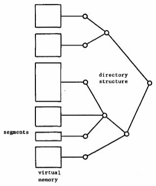
Fig. 1. Virtual memory of a Multics process.
Addressing in Multics
The generalized address. Each word in the address space of a process is identified by a generalized address. As shown in Figure 2, a generalized address consists of two parts: a segment number and a word number. The addressing mechanisms of the processor are designed so that
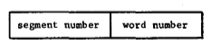
Fig. 2. The generalized address.
A process may make effective reference to a word by means of its generalized address when the word has an assigned location in main memory. Together with supervisor software, these mechanisms make reference by generalized address effective regard less of where the word might reside in the storage hierarchy by placing it in main memory when needed. Thus the generalized address is a location-independent means of identifying information. In the following paragraphs we explain how generalized addresses are formed in the processor and give a brief discussion of how they are made effective.
Address formation. Each processor of the computer system (Figure 3) has an accumulator A, a multiplier/quotient Q, eight index registers X0, X1, ... X7, and a program counter PC which serve conventional functions. For the implementation of generalized addressing and intersegment linking, a descriptor base register, a procedure base register and four base pair registers are included in each processor. The function of the descriptor base register will be discussed in a later paragraph since it does not participate in generalized address formation. The procedure base register always contains the segment number of the procedure being executed. Each of the four base pair registers (called simply base registers in the sequel) holds a complete generalized address (segment number/word number pair) and is named according to its specific function in Multics:
| base pair | designation | function |
|---|---|---|
| 0 | ap | argument pointer |
| 1 | bp | base pointer |
| 2 | lp | linkage pointer |
| 3 | sp | stack pointer |
The functions of these pointers will become clear when the linkage mechanism is explained.
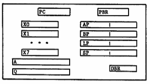
Fig. 3. Processor registers for address formation.
The instruction format of the processor is given in Figure 4. Instructions are executed sequentially except where a transfer of control occurs. Hence, the program counter is normally advanced by one during the execution of each instruction.
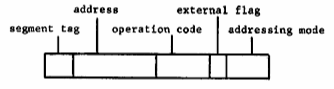
Fig. 4. Instruction format.
When the processor requires an instruction word from memory, the corresponding generalized address is the segment number in the procedure base register coupled with the word number in the program counter (Figure 5). For data references, a field in the instruction format called the segment tag selects one of the base registers if the external flag is on. The effective address computed from the address field of the instruction by the usual indexing procedure is added to the word number portion of the selected base to obtain the desired generalized address. This operation is illustrated by Figure 6 and is used to reference all information outside the current procedure segment. If the external flag is off, then the generalized address is the segment number taken from the procedure base register coupled with an effective word number computed as before. This mechanism is used for internal reference by a procedure to fetch constants or for transfer of control.
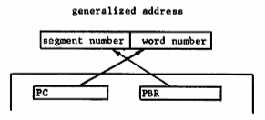
Fig. 5. Address formation for instruction fetch.
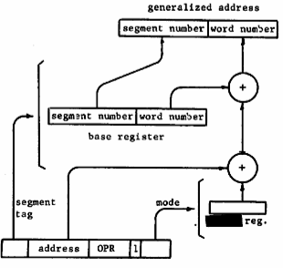
Fig. 6. Address formation for data access.
Indirect addressing. As will be seen when the linkage mechanism is discussed, a method of indirect addressing in terms of generalized addresses is very valuable. In the processor the addressing mode field of instructions may indicate that indirect addressing is to be used. In this case, the generalized address, formed as explained above for data references, is used to fetch a pair of 36-bit words which is interpreted as shown in Figure 7. If the address mode field of the first word contains the code its (Indirect To Segment), the segment number and word number fields are combined to produce a new generalized address. This address is augmented by indexing according to the mode field of the second word of the pair. Further indirect addressing may also be specified.
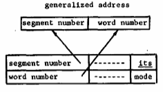
Fig. 7. Interpretation of word pair as indirect address.
The descriptor segment. Implementation of a memory access specified by a generalized address calls for an associative mechanism that will yield the main memory location of any word within main memory when a segment number/word number combination is supplied. A direct use of associative hardware was impossible to justify in view of the other possibilities available.
The means chosen to implement the generalized address for a process is essentially a two-step hardware table look-up procedure as illustrated by Figure 8. The segment number portion of the generalized address is used as an index to perform a table look-up in an array called the descriptor segment of the associated process. This descriptor segment contains a descriptor for each segment that the process may reference by generalized address. Each descriptor contains information that enables the addressing mechanism to locate the segment, and information that establishes the appropriate mode of protection of the segment for this process.
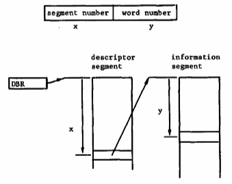
Fig. 8. Addressing by generalized address.
The descriptor base register is used by the processor to locate the descriptor segment of the process in execution. Note that since segment numbers and word numbers are non-location dependent data, the only location dependent information contained in the processor registers shown in Figure 3 is in the descriptor base register. This fact greatly simplifies the bookkeeping required by the system in carrying out reallocation activity. In fact, switching a processor from one process to another involves little more than swapping processor register status and substituting a new descriptor base.
In practice this implementation requires that segment numbers be assigned starting from zero and continuing successively for the segments of procedure and data required by each process. An immediate consequence is that the same segment will, in general, be identified by different segment numbers in different processes.
Paging. Both information segments and descriptor segments may be sufficiently large that paging is desirable to simplify storage allocation problems in main memory. Paging is implemented by means of page tables in main memory which provide for trapping in case B page is not present in main memory. The page tables also contain control bits that record access and modification of pages for use by storage allocation procedures. A small associative memory is built into each processor so that most references to page tables or descriptor segments may be bypassed.
Intersegment Linking and Addressing
The ability of many users to share access to procedure and data information, and the power of being able to construct complex procedures by building on the work of others are two prime desiderata of multiprocess computer systems. The potential value of these features to the advancement of computer applications should not be underestimated. The design of a system around the notion of a generalized, location-independent address is an essential ingredient in meeting these objectives. It remains to show how the sharing of data and procedure segments, and the building of programs out of component procedure segments can be implemented within the framework of the Multics addressing mechanisms just described. In particular we must show how references to external data (and procedure) segments occurring within a shared procedure segment can be correctly interpreted for each of possibly many processes running concurrently.
Requirements. Necessary properties of a satisfactory intersegment addressing arrangement include the following:
Procedure segments must be pure, that is, their execution must not cause a single word of their content to be modified.
Pure procedure is a recognized requirement for general sharing of procedure information.
It must be possible for a process to call a routine by its symbolic name without having made prior arrangements for its use.
This means that the subroutine (which could invoke in turn an arbitrarily large collection of other procedures) must be able to provide space for its data, must be able to reference any needed data object, and must be able to call on further routines that may be unknown to its caller.
Segments of a procedure must be invariant to the recompilation of other segments.
This requirement has the following implication: The values of identifiers that denote addresses within a segment which may change with recompilation must not appear in the content of any other segment.
Making a segment known. Meeting condition (1) requires that a segment be callable by a process even if no position in the descriptor segment of the process has been reserved for the segment. Hence a mechanism is provided in the system for assigning a position in the descriptor segment (a segment number) when the process first makes reference to the segment by means of its symbolic name. We call this operation making the segment known to the process. Once a segment is known, the process may reference it by its segment number.
The pattern of descriptor segment assignment will be different for each process. Therefore it is not possible, in general, for the system to assign a unique segment number to a shared routine or data object. This fact is a major consideration in the design of the linking mechanism. In the following paragraphs we describe a scheme for implementing the linkage of segments that meets the requirements stated above.
It is worth emphasizing that this discussion has nothing to do with the memory management problem that the supervisor faces in deciding where in the storage hierarchy information should reside. All information involved in the linkage mechanism is, as will be seen, referenced by generalized addresses which are made effective by the mechanisms described earlier. The fact that pages of the segments referred to in the following discussion may be in or out of main memory at the time a process requires access to them, is irrelevant.
Linkage data. Before a segment becomes known to a process the segment may only be referenced by means of a symbolic path name [2] which permanently identifies the segment within the directory structure. Since the segment number used to reference a particular segment is process dependent, segment numbers may not appear internally in pure procedure code. For this reason, a segment is identified within a procedure segment by a symbolic segment reference name. Before a procedure can complete an external segment reference, the reference name must be translated into a path name by means of a directory searching algorithm and the desired segment made known to the process. Once the segment has become known to the process, we wish to substitute the efficient addressing mechanism based on the generalized address for the time-consuming operation of searching the directory structure.
Consider a procedure segment P that makes reference to a word at location x within data segment D, as illustrated in Figure 9. In assembly language this would be written as
OPR <D>|[x]
The angle brackets indicate that the enclosed character string is the reference name of some segment. This name will be used to search the directory structure the first time segment P is referenced by a process. The square brackets indicate that the enclosed character string is a symbolic address within an external segment.
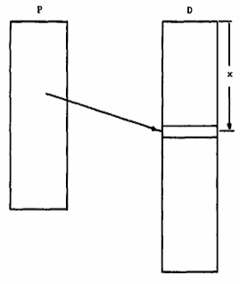
Fig. 9. An intersegment reference by procedure P.
Since by requirement (3) we wish segment P to be invariant to recompilation of D, only the symbolic address [x] may appear in P. Furthermore, we wish to delay the evaluation of [x] until a reference to it is actually made in the running of a process.
The following problem arises: Initially process α in executing procedure P may reference <D>|[x] only by symbolic segment name and symbolic external address. After segment D has been made known to process α, and a first reference has been effected, we wish to make further references by the generalized address d#α|x. The question is: How can we make the transition from symbolic reference to generalized addressing without altering the content of segment P?
It should be clear that a change must be made some place that can effect the change in addressing mechanism. Further, the data that is changed must participate in every reference to the information. We will call the information that is altered in value to make this transition the link data for linking segment P to symbolic addresses <D>|[x] in process α. The collection of link data for all external references originating in segment P is called the linkage section of procedure P.
Link data is private data of its process because whether P is linked to D|x for process α is entirely independent of whether the same is true for any other process. Therefore, whenever a procedure segment is made known to a process a copy of the procedure's linkage section is made as a segment within that process. In certain cases the linkage sections of several procedures are combined into a single linkage segment private to the process.
Linking. Figure 10 shows segments P, D and the linkage section Lα for P in process α. To implement reference to D|x from within segment P will require two references by generalized address one to access the pertinent link data in Lα, and one to fetch the word addressed in segment D. Realization of this minimum number of references implies use of the indirect addressing feature of the processor. Thus the link data for an established link will be an indirect word pair containing the generalized address D#α|x (Figure 11a). Before the link is established, an attempt by a process of computation α to reference D|x through the link must lead to a trap of the process and transfer of control to the system routines that will establish the link and continue operation of the process. For this purpose a special form of indirect word pair is used which causes the desired trap. In Figure 11b this is indicated by the code ft in the addressing mode field of the pair.The segment number and word number fields of the indirect word can then be used to inform supervisory routines of the place to look to find the symbolic address <D>|[x] associated with the link. This address must be translated into a generalized address to establish the link. The operation of changing the link data to establish a link is called linking.
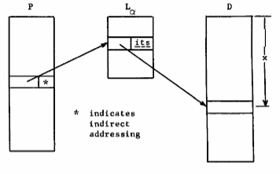
Fig. 10. Linkage of P to D|x for process α.
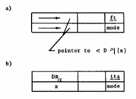
Fig. 11. States of the link data.
It is desirable to keep the procedure segment P self-contained if at all possible. Consequently the symbolic address <D>|[x] pointed to by the un-established link should be part of the procedure segment P. Two look-up operations are required on the part of supervisory routines to establish the link. The symbolic reference name D must be associated with a specific segment through a search in the directory structure, and this segment must be made known to the process if a segment number has not already been assigned.
The word number corresponding to the symbolic word name x must also be determined. The set of associations between symbolic word names and word numbers for a segment is its symbol table and is part of the segment. Thus, in our example, a list of word numbers corresponding to symbolic word names that may appear in references to segment D from other segments is included as part of segment D at a standard position known to the system. This list is searched by a system routine to find the word number required to establish a link.
The link pointer. A remaining question is: How does a process produce the generalized address L#α|w required to access the link data? One might suppose that word address w could be fixed permanently at the time procedure segment P was created. This is not possible because the set of segments required by each process that might share use of procedure P will in general be unre1ated: If the linkage sections of several procedures were placed in a single segment, assigning a fixed position to a link for all processes would produce intolerable conflicts. On the other hand, the code by which a inter segment reference is represented in segment P must be fixed and identical for all computations to meet the pure procedure constraint. Any data that allows different addresses to be formed from fixed code must reside in processor registers. By this argument we see the necessity of associating a linkage pointer with each process. The linkage pointer is a generalized address that resides in a dedicated base register (designated lp). As shown in Figure l2, it is the origin L#α|s of the portion of a linkage segment that contains the links for intersegment references made from the segment being executed.
References to external segments are coded relative to the link pointer and have the form shown in Figure 12. The displacement k is determined by the coding of P and is invariant with respect to the process using P.
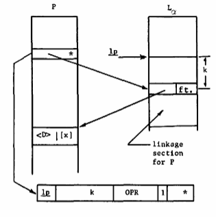
Fig. 12. Addressing the link data.
Procedure Call and Return. The coding used to transfer control to a sub-procedure and the subsequent return of control must meet the requirements of programming generality. In particular, no assumptions may be made regarding the detailed coding of either the calling or called procedure other than those aspects uniformly established by convention. Conventions for four aspects of subroutine calling are relatively familiar:
- Transmission of arguments
- Arranging for return of control
- Saving and restoring processor state
- Allocating private storage for the called procedure.
Item (4) is necessary in Multics because of the pure procedure requirement, and the generality requirement which forbids prior arrangement of a called procedure's storage needs. This private storage is supplied by associating the stack segment with each process in which a frame of private storage is reserved at each procedure call. The frame is released upon return of control. This mechanism is implemented by the stack pointer (designated sp) which is the generalized address of the stack frame origin for the procedure in operation. The use of the stack segment makes every procedure in Multics automatically recursive by associating separate stack frames with successive entries into the same procedure. Due to the pure procedure requirement, only fixed arguments that do not depend on segment numbers may appear in procedure segments. Pointers and variable arguments must be placed in the stack segment, the linkage segment, or elsewhere. So that the language designer may have his choice of implementation, the argument pointer (designated ap) is at procedure entry the generalized address of the list of arguments for the called procedure.
In addition to these conventional requirements, the method of dynamic linking just described introduces one new problem: When process α, in executing procedure P, transfers control to procedure Q, the value of linkage pointer must be changed to the generalized address of the linkage section for procedure Q. Since the new value of the linkage pointer contains a segment number, it is private data of process α and cannot be placed in segment P or Q.
This problem requires a somewhat modified form of intersegment linkage from that used for data references. Since it is desirable that the machine code necessary to load the linkage pointer for a procedure segment be associated with that segment, the following solution was adopted. For each external entry point within a procedure segment two additional instructions are placed in the procedure's linkage section at compilation time. The first instruction loads the linkage pointer with the appropriate value at procedure entry, and the second instruction transfers control to the entry point in the called procedure segment. Thus in establishing the link for an external procedure call, the generalized indirect address placed in the calling procedure's link data points to the corresponding instruction pair in the linkage section of the procedure being called. When control passes to the linkage segment during an external procedure call, the segment number portion of the desired linkage pointer is easily obtained from the procedure base register, since the process is now executing in the desired linkage segment.
Figure 13 depicts the linkage mechanism required for an external procedure call from procedure P to segment Q at entry point e. The solid lines indicate the individual steps taken through indirect addresses while the dashed lines indicate resulting flow of control.
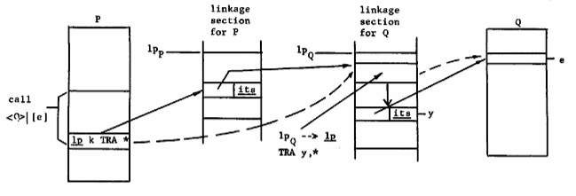
Fig. 13. Linkage mechanism for procedure entry.
In executing a call to an external procedure, the caller's machine conditions, including the procedure base register and program counter, are saved in the stack segment by the caller. Return from the called procedure can thus be effected by simply restoring the caller's machine conditions from the stack segment.
Acknowledgment
The evolution of the concepts presented in this paper represents the efforts of many members of the Multics programming staff. However, the authors wish to express particular appreciation of the work of F.J. Corbató and R.M. Graham in developing the basic design of the Multics Linkage mechanism.
References
- Corbató, F.J., and Vyssotsky, V.A., Introduction and overview of the Multics system, AFIPS Conference Proceedings Vol. 28, Spartan Books, Baltimore, 1965, p. 185-197.
- Daley, R.C., and Neumann, P.G., A general-purpose file system for secondary storage, AFIPS Conference Proceedings, Vol. 28, Spartan Books, Baltimore, 1965, p. 213-229.
- Dennis, J.B., Segmentation and the design of multiprogrammed computer systems, Journal of the ACM, Vol. 12, No.4, (October 1965), p. 589-602.
- Dennis, J.B., and Van Horn, E.C., Programming semantics for multiprogrammed computations, Communications of the ACM, Vol. 9, No.3, (October 1966),p.143-l55.
- Dijkstra, E.W., Cooperating sequential processes, Technological University, Eindhoven, The Netherlands.
- Glaser, E.L., Cou1eur, J.F., and Oliver, G.A., System design of a computer for time-sharing applications. AFIPS Conference Proceedings, Vol. 28, Spartan Books, Baltimore, 1965, p. 197-202.
- Graham, R.M., Protection in an information processing utility. To be presented at the ACM Symposium on Operating System Principles, Gatlinburg, Tenn., October 1-4.
- Kilburn, T., Edwards, D., Lanigan, M., and Summer, F., One level storage system, IRE Transactions EC-11, 2,(April 1962),p. 223-235
- Saltzer, J.H., Traffic control in a multiplexed computer system. Technical Report No. MAC-TR-30 (Ph.D. thesis), Project MAC, MIT, Cambridge, MaSs., 1964.
Communications of the ACM 11, 306-312, May 1968
*Work reported herein was supported in part by Project MAC, an M.I.T. research project sponsored by the Advanced Research Projects Agency, Department of Defense, under Office of Naval Research Contract Nonr-4102(Ol). Reproduction of this report, in whole or in part, is permitted for any purpose of the United States Government.
This paper is based on notes prepared by J. Dennis for the University of Michigan Summer Conference on Computer and Program Organization, June, 1966.
"This material is presented to ensure dissemination of scholarly and technical work. Copyright and all rights therein are retained by authors or by other copyright holders. All persons copying this information are expected to adhere to the terms and constraints invoked by each author's copyright. In most cases, these works may not be reposted without the explicit permission of the copyright holder."